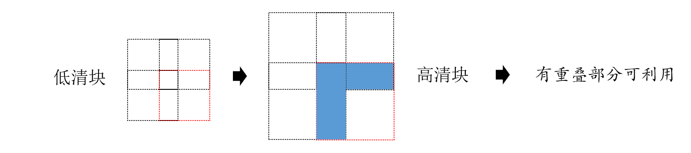

超分文章三：Image Super-Resolution as Sparse Representation of Raw Image Patches
- Image Super-Resolution as Sparse Representation of Raw Image Patches
- ICCV 2008, Jianchao Yang, UIUC
先说一下作者，你会看到作者列表中有一个人叫做 Thomas Huang（黄煦涛），第一作者是他的学生，Huang 是超分领域的开山泰斗。
我个人见解：本篇文章主要贡献就是引入字典解决超分（看这篇文章之前需要知道稀疏字典的知识）。
首先同样根据一些自然图像构建低清字典和高清字典，怎么构建的，这个先不管。反正我们现在有了可以表示各个低清块和高清快的两个字典，分别设为 \(D_l\) 和 \(D_h\)。有字典之后，输入低清块 \(y\)，我们求系数 \(\alpha\)： \(D_l * \alpha \approx y\)；然后输出高清块 \(x\)，我们认为 \(D_h * \alpha \approx x\)。
\(\alpha\) 的求解
关键点就是，求 \(\alpha\) 时候 \(D_l * \alpha \approx y\) 是怎样地约等于，是用最小均方误差？还是什么？本篇的方式是认为能有最稀疏的表示：
其中 \(F\) 表示提取特征，这个在之前的论文里也看到过，比如就使用像素值作为特征，比如用一阶二阶微分作为特征。回到这个式子，这个怎么解呢，不好解，是 NP-Hard 问题。但是有文献表明，如果 \(\alpha\) 很稀疏，那么就可以变成：
这个就好解决，用拉格朗日乘子法：
但是真就这样解决了吗？不！我们还可以利用块与块的重叠，比如低清块大小是 3*3，我们每次预测的时候移动两个单位，那么有的部分是重叠的，如下图所示：

假如我们是处理右下角这个虚线框时候，高清块重叠部分有图中的蓝色部分，这些蓝色部分可以为我们所用。因此我们修改条件 \(\eqref{1}\) 如下：
其中，P 表示提取重叠块，w 表示与之前已经预测好的高清块重叠的区域，其实这两就是示例图片的蓝色部分。此时拉格朗日乘子法为：
其中 \(\beta\) 是自己设置的超参数，用于平衡两个限制条件。以上就是求解 \(\alpha\) 的最终方式，最后预测 \(x = D_h * \alpha\)。
求解后的优化
对一个个块进行求解后，最终得到一整张图片。但是作者还不满足，因为要明白我们认为 \(D_h * \alpha \approx x\)，这是约等于，所以还是有误差，所以尝试用整体来优化。
设整体的图片，低清图片是 \(Y\)，高清图片是 \(X\)。在超分领域中，我们有如下公认的道理，其中 D 是下采样，H 是用于模糊的滤波。：
假设 \(X_0\) 是实际的高清图片，现在我们的目标为：
作者使用了 back-projection 方法解决，其中 \(\uparrow s\) 是上采样，\(p\) 是一个 back-projection 滤波器，都是自己设置的方式：
其实这里 back-projection 我也不太会，反正只要知道这是不断迭代的方式，反正知道上一步通过不断拿一个小块去推测对应的高清块，直到预测完一个高清图片后，就根据上面公式进行迭代就行，迭代这一步就和之前每次取小块预测无关了。
字典的选取
想要有一个最佳的过完备字典非常困难。作者直接通过对训练集的图片进行随机采样，采了大概 100,000 个块作为基向量。实验发现结果挺不错的，而且作者还提供了两个模式，一个是对花朵图片采样，一个是对动物图片采样（恢复带毛的纹理的图片效果更好）。
个人见解：本篇文章实际上就是用字典替代之前的 K-means 聚类，从暴力搜索到KMeans聚类再到字典，可以说这个发展脉络还是清晰的。另外就是在低清块上求解系数的时候，也做了一些改进，主要是因为字典，用上了系数比较稀疏这一特点。